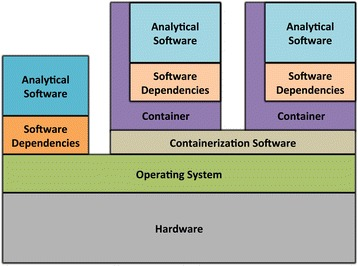

Bioinformatic Reproducibility

We will focus here on software deployment.
You want …
… to publish and share
.. to reuse
… to scale out
The Challenges …
-
Many software tools in specific versions.
-
Pre-installed "department software stack".
-
Where to download the correct versions and how to compile them?
-
Do this 1000 times?
Software Deployment
There are uncontrollable factors:
-
Software on the host operating system evolves
-
Windows, Mac, dozens of Linux distributions, in different versions …
-
-
Bioinformatic software packages may get lost
-
You don’t want to waste you time with this technical stuff
-
… there are also the other reproducibility aspects
-
… and the publishing …
-
|
Note
|
Implement reproducibility features as early as possible! |
Requirements
-
Quick and correct software deployment
-
Simple user-space installation without administrator rights
-
Manage multiple independent tool sets
-
Lots of packages … maintained by s.b. else ;-D
-
Easy sharing of workflows
-
Possible to publish of your tools
Enter Conda
-
Open source software by Anaconda Inc. (Continuum Analytics Inc.)
-
Command-line tool based on Python (2.7, 3.6)
-
Anaconda and Miniconda distributions
-
For Linux > 9000 packages, > 86.000 versions (including those for bioinformatics)
-
Linux
-
MacOS
-
Windows
-
Using Conda
Install Miniconda
$ wget https://repo.continuum.io/miniconda/Miniconda3-latest-Linux-x86_64.sh (1)
$ bash Miniconda3-latest-Linux-x86_64.sh-
alternatively take
curl https://repo.continuum.io/miniconda/Miniconda3-latest-Linux-x86_64.sh -o Miniconda3-latest-Linux-x86_64.shor just your browser.
|
Warning
|
Choose a place where you have a enough free space. Environments are (by default) also installed there and each can take up 100s of megabytes. E.g. use df -h to get information about free space.
|
Now start conda and get some information about the interface:
$ conda
usage: conda [-h] [-V] command ...
conda is a tool for managing and deploying applications, environments and packages.
Options:
positional arguments:
command
info Display information about current conda install.
help Displays a list of available conda commands and their help
strings.
list List linked packages in a conda environment.
search ...
create ...
install ...
...... and the basic configuration information:
$ conda info
Current conda install:
platform : linux-64
conda version : 4.3.21
conda is private : False
conda-env version : 4.3.21
conda-build version : not installed
python version : 3.6.1.final.0
requests version : 2.14.2
root environment : /path/to/your/miniconda3 (writable)
default environment : /path/to/your/miniconda3
envs directories : /path/to/your/miniconda3/envs
/path/to/your/.conda/envs
package cache : /path/to/your/miniconda3/pkgs
/path/to/your/.conda/pkgs
channel URLs : https://repo.continuum.io/pkgs/free/linux-64
https://repo.continuum.io/pkgs/free/noarch
https://repo.continuum.io/pkgs/r/linux-64
https://repo.continuum.io/pkgs/r/noarch
https://repo.continuum.io/pkgs/pro/linux-64
https://repo.continuum.io/pkgs/pro/noarch
https://conda.anaconda.org/r/linux-64
https://conda.anaconda.org/r/noarch
config file : /path/to/your/.condarc
netrc file : None
offline mode : False
user-agent : conda/4.3.21 requests/2.14.2 CPython/3.6.1 Linux/3.10.0-514.el7.x86_64 CentOS Linux/7.3.1611 glibc/2.17
UID:GID : 21917:1110Channels
-
Channels are conda’s package repositories
-
Multiple channels can be used at the same time with different priorities
$ conda config --add channels defaults (1)
$ conda config --add channels conda-forge
$ conda config --add channels bioconda-
Ananconda Inc.'s default channels
Each command adds a channel with higher priority than the previous commands.
Now the output of …
$ conda info
...
channel URLs : https://conda.anaconda.org/bioconda/linux-64 (1)
https://conda.anaconda.org/bioconda/noarch (1)
https://conda.anaconda.org/conda-forge/linux-64 (1)
https://conda.anaconda.org/conda-forge/noarch (1)
https://repo.continuum.io/pkgs/free/linux-64
https://repo.continuum.io/pkgs/free/noarch
https://repo.continuum.io/pkgs/r/linux-64
https://repo.continuum.io/pkgs/r/noarch
https://repo.continuum.io/pkgs/pro/linux-64
https://repo.continuum.io/pkgs/pro/noarch
https://conda.anaconda.org/r/linux-64
https://conda.anaconda.org/r/noarch
...-
... will show the updated channel list with the "bioconda" and "conda-forge channels.
Finding Packages
$ conda search -h
usage: conda search [-h] [-n ENVIRONMENT | -p PATH] [-i] [-C]
[--platform PLATFORM] [--reverse-dependency] [--offline]
[-c CHANNEL] [--override-channels] [--json] [--debug]
[--verbose] [--use-local] [-k] [--envs]
...
$ conda search samtools
Loading channels: done
# Name Version Build Channel
samtools 0.1.12 0 bioconda
samtools 0.1.12 1 bioconda
samtools 0.1.12 2 bioconda
...
samtools 0.1.19 0 bioconda
samtools 0.1.19 1 bioconda
samtools 0.1.19 2 bioconda
samtools 0.1.19 3 bioconda
samtools 1.0 0 bioconda
samtools 1.0 1 bioconda
samtools 1.0 hdd8ed8b_2 bioconda
samtools 1.1 0 bioconda
...
samtools 1.8 2 bioconda
samtools 1.8 3 bioconda
samtools 1.8 4 bioconda
samtools 1.8 h46bd0b3_5 biocondaFirst, you’ll notice that a search can take some time!
The output shows which package versions match the search expression and are available from which channel in which version.
Note that the build version sometimes is pretty simple, but sometimes rather cryptic. Build versions represent the same package but with changed
-
Compile parameters
-
Dependencies (numpy, …)
-
Interpreters (Perl, Python, R, …)
-
Commit hashes (where you can hope they produce the same results)
-
Commit hashes are identifiers given to individually tracked versions of a software
-
No officially released versions
-
You can also search for specific package versions and builds:
$ conda search samtools==0.1.19 (1)
Loading channels: done
# Name Version Build Channel
samtools 0.1.19 0 bioconda
samtools 0.1.19 1 bioconda
samtools 0.1.19 2 bioconda
samtools 0.1.19 3 bioconda
$ conda search '*samtools' (2)
Loading channels: done
# Name Version Build Channel
bioconductor-rsamtools 1.22.0 r3.2.2_0 bioconda
bioconductor-rsamtools 1.22.0 r3.2.2_1 bioconda
bioconductor-rsamtools 1.24.0 r3.3.1_0 bioconda
bioconductor-rsamtools 1.26.1 r3.3.1_0 bioconda
bioconductor-rsamtools 1.26.1 r3.3.2_0 bioconda
bioconductor-rsamtools 1.26.1 r3.4.1_0 bioconda
bioconductor-rsamtools 1.28.0 r3.4.1_0 bioconda
bioconductor-rsamtools 1.30.0 r3.4.1_0 bioconda
perl-bio-samtools 1.43 0 bioconda
samtools 0.1.12 0 bioconda
samtools 0.1.12 1 bioconda
...-
You can also try
conda search 'samtools>=1'. -
The quotes prevent globing the asterisk by the shell.
|
Tip
|
Check the Conda documentation on package specification for a description of the match pattern if you need to do complex searches. |
Environments
Environments allow you to handle different — potentially incompatible — sets of tools.
To list all available environments you can do:
$ conda list (1)
# conda environments:
#
base * /data/kensche/work/share/miniconda3-
An equivalent command is
conda info --envs
Let’s create a new environment with another great tool for reproducible research:
$ conda create -n interactive-analysis jupyter-notebook scipyFirst this shows you which exact versions and builds will be installed. For a single tool a large number of dependencies may be pulled in. This request will install about 125 MB of tools! Many of them are likely not used or needed by you.
After you confirmed that the installation is o.k. the packages will get downloaded. When finished you can see the "interactive-analysis" in the list of your environments.
$ conda env list
# conda environments:
#
base * /path/to/your/miniconda3
interactive-analysis /path/to/your/miniconda3/envs/interactive-analysisLet’s first try
$ jupyter notebook
bash: jupyter: Command not foundThat’s probably the obvious outcome of this negative control experiment :-P
Now switch to the newly installed environment and try out you new toy:
$ source activate interactive-analysis
$ jupyter notebookJupyter notebook will show a URL on the standard output and open it in a browser. You can then start a "Python 3 kernel" at the top right in the bar …
... and then enter arbitary Python 3 expressions, such as
import matplotlib.pyplot as plt
import numpy as np
import scipy.stats as sp
import math
mu = 0
variance = 1
sigma = math.sqrt(variance)
x = np.linspace(mu - 3*sigma, mu + 3*sigma, 100)
plt.plot(x,sp.norm.pdf(x, mu, sigma))
plt.show()|
Note
|
Jupyter provides kernels as programming language backends. A complete list can be found at https://github.com/jupyter/jupyter/wiki/Jupyter-kernels. |
Oops!
Actually, in my case when starting the Python kernel in Jupyter, I got an error message. Apparently, the specific version of the Jupyter package was broken!
This is not only a demonstration of the daily life in bioinformatics but also the ideal opportunity to demonstrate that you can install arbitrary Python packages in this environment using the pip tool. So after …
$ pip install jupyter -U... an up-to-date Jupyter Notebook package is installed in the environment!
Leaving Environments
After you are done with your work, you can do …
$ source deactivate... to restore you original, Conda-free environment.
Sharing Environments
How to transfer an environment to a different machine?
-
Export the environment specification into a YAML file.
$ conda env export -n interactive-analysis > environment.yamlThe resulting YAML file looks like this:
name: interactive-analysis channels: - defaults - r - bioconda - conda-forge dependencies: - bleach=1.4.2=py36_0 - ca-certificates=2017.11.5=0 - certifi=2017.11.5=py36_0 - dbus=1.10.22=0 - samtools=4.1.2=py36_0 ... prefix: /path/to/your/miniconda3/envs/interactive-analysisThe
prefixline shows a local path and is non-essential. It can be removed when publishing. -
Copy the file to the target machine.
-
Create a new environment using the file. We just make a local copy for demonstration, but you could equally execute this on a different system.
$ conda env create -n interactive-analysis-copy -f environment.yaml
After this you can source activate the new environment!
Removing Environments
Let’s remove the copy of the "interactive-analysis" environment we just created:
$ conda env list
# conda environments:
#
base /path/to/your/miniconda3
interactive-analysis /path/to/your/miniconda3/envs/interactive-analysis
interactive-analysis-copy /path/to/your/miniconda3/envs/interactive-analysis-copy
$ conda env remove -n interactive-analysis-copy
$ conda env list
# conda environments:
#
base /path/to/your/miniconda3
interactive-analysis /path/to/your/miniconda3/envs/interactive-analysisRenaming Environments
There is no dedicated renaming command. Instead, renaming an environment is done by "cloning" it and removing the original:
$ conda create --clone interactive-analysis -n my-nature-publication
$ conda remove -n interactive-analysis
$ conda env list
# conda environments:
#
base /path/to/your/miniconda3
my-nature-publication /path/to/your/miniconda3/envs/my-nature-publicationLimitations
Conda is easy to install and use, but also has its limitations.
-
Of each package only a single version can be installed.
-
conda installcan be slow or may even not terminate. -
conda installmay fail to find non-conflicting package versions. -
Dependencies in the "build recipes" can be too narrow or too wide.
-
Contributing recipes can be hard
-
Not all software is accepted by all channels.
-
Different channels provide different tooling for contributing packages ("continuous integration").
-
-
Packages can get lost! (So far for reproducibility!)
Package Loss?
-
Complete rebuild of channels
-
May result in updated build dependencies (Perl, R, Python)
-
-
Packages get moved between channels (e.g. Bioconda <→ Conda Forge)
-
May result in updated build dependencies (Perl, R, Python)
-
-
Packages get completely removed
How to cope with these problems?
"bioconda-legacy" Channel
Some outdated packages can still be present there.
Search 'bioconda-legacy' without adding it to the channel queue:
$ conda search -c bioconda-legacy 'r-getopt==1.20.0=r3.2.2_0'Add the channel to your channel list with
$ conda config --add channels bioconda-legacyUpgrade to newer R, Perl, Python
It may be safe to upgrade to larger versions of R, Perl, Python, as long as the bioinformatic packages remain at the same version.
-
Remove version constraints from the exported environemnt YAML file
-
Let Conda find a suited package version
name: interactive-analysis
channels:
- defaults
- r
- bioconda
- conda-forge
dependencies:
- ca-certificates (1)
- r-base=3.3.* (2)
- r-lattice=0.20_34 (3)
...-
Complete version removed. Package has little influence on the analysis.
-
Changed from "=r3.3.2=5".
-
Left out the R version "=r3.3.2_0". Package is highly stable since before R 2.0.
Other Solutions
-
Build a local version of the package with
conda build-
May require old package recipes from the channel’s Github repositories
-
-
Keep a local channel copy?
-
Use containers or virtual machines to avoid having to reinstall the Conda environment
Virtualization & Containers
-
Conda uses host-OS software that runs on the host system.
-
Virtualization separates host-OS and analysis environment.
-
Separation in terms of software and execution environment
-
Virtualization provides completely separation in independent OS
-
Containerization uses the host-operating system but provides separate environment for software deployment and execution

-
-
Conda as a tool for managing software dependencies can easily be combined with virtualization technologies.
-
Virtualization technologies
-
Container technologies
Summary
-
Conda has probably the largest community of bioinformatic package contributors.
-
With Conda it is easy and fast to set up environments.
-
You can contribute recipes for packages you need or your own packages.
-
Conda can well be combined with container technology, like Singularity or Docker
-
at the cost of additional complexity
-
BioConda has automatic building of Docker and Singularity containers to BioContainers
-
|
Tip
|
Implement reproducibility features as early as possible! |
Further Material
-
Conda User’s Guide @ https://conda.io/docs/user-guide
-
BioConda article @ https://www.nature.com/articles/s41592-018-0046-7
-
NBIS Reproducible Science Course @ https://nbis-reproducible-research.readthedocs.io/en/latest/
-
Source code revisioning with Git @ https://git-scm.com/
-
Git Book @ https://git-scm.com/book/en/v2
-
Github Flow @ https://guides.github.com/introduction/flow/
-
-
Miniconda @ https://conda.io/miniconda.html
-
BioConda Recipes @ https://github.com/bioconda/bioconda-recipes
References
-
Virtualization & Containerization images from Piccolo & Framton, 2016